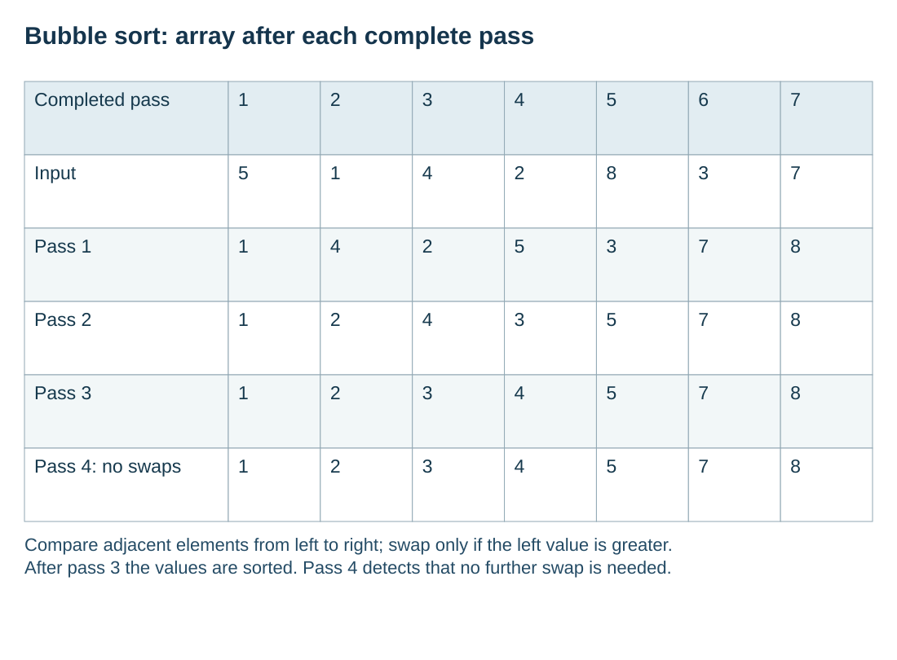

Trace adjacent comparisons and complete passes
S10.06.A02
Visual overview
Bubble sort: array after each complete pass

Visual transcript
- Completed pass: Input; 1: 5; 2: 1; 3: 4; 4: 2; 5: 8; 6: 3; 7: 7.
- Completed pass: Pass 1; 1: 1; 2: 4; 3: 2; 4: 5; 5: 3; 6: 7; 7: 8.
- Completed pass: Pass 2; 1: 1; 2: 2; 3: 4; 4: 3; 5: 5; 6: 7; 7: 8.
- Completed pass: Pass 3; 1: 1; 2: 2; 3: 3; 4: 4; 5: 5; 6: 7; 7: 8.
- Completed pass: Pass 4: no swaps; 1: 1; 2: 2; 3: 3; 4: 4; 5: 5; 6: 7; 7: 8.
- Compare adjacent elements from left to right; swap only if the left value is greater.
- After pass 3 the values are sorted. Pass 4 detects that no further swap is needed.
Core explanation
An ascending bubble sort compares neighbouring elements from left to right and swaps them if the left value is greater. After the first full pass, the largest value is at the final position. Further passes repeat the process over the remaining unsorted prefix.
Every swap preserves both original values: save the left value in Temp, copy the right value into the left position, then copy Temp into the right position. The diagram records the state after each pass, always with exactly seven elements. Equal adjacent values need no swap.
Bubble sort procedure
- Compare neighboursFor Index from 1 to Last − 1, compare Values[Index] with Values[Index + 1].
- Swap completelyUse Temp to preserve the original left value before either position is overwritten.
- Shorten the prefixReduce Last because the greatest remaining value is now fixed at the right.
- StopFinish when a pass makes no swaps or the unsorted prefix has one element.